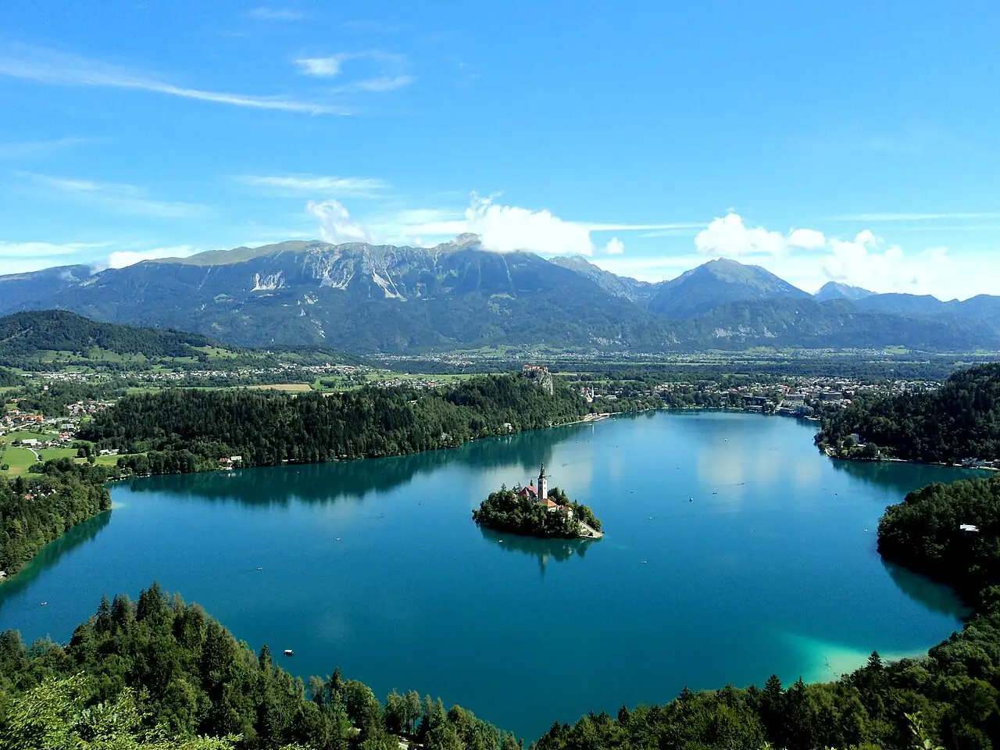

Lac de Bled
Haute-Carniole, Slovénie · baignade, paddle, kayak

Lac alpin au pied des Alpes juliennes, avec son île et son église au milieu et son château sur la falaise. On s’y baigne l’été depuis la plage du château et on en fait le tour en paddle ou en kayak.
- Lieu
- Haute-Carniole, Slovénie
- Niveau
- Débutant
- Activités
- baignade, paddle, kayak
- Type d'eau
- lake
- Coordonnées
- 46.37, 14.10 (position approximative du secteur)
Dangers à connaître
- Plan d’eau partagé avec les barques pletna et les rameurs.
- Eau fraîche en dehors du cœur de l’été.
Le conseil d'Ocean Buddy
Pars tôt le matin en paddle pour rejoindre les abords de l’île avant l’arrivée des barques traditionnelles.
Ouvrir dans Ocean Buddy Télécharger sur l'App Store
Source : Fiche Ocean Buddy · septembre 2026 · à vérifier localement.